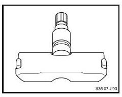

Tire Monitor System - Wheel Sensor Damage Prevention
SI B 36 01 08Wheels and Tires
August 2008
Technical Service
SUBJECT
Tire Pressure Warning Caused by Damaged Wheel Electronics
MODEL
E82, E88 (1 Series)
E46 (3 Series) with option code 298
E90, E91 (3 Series) from 3/07
E92, E93 (3 Series)
E60, E61 (5 Series) except M5 from 3/06
E60 (M5) from 9/06
E63, E64 (6 Series) except M6 from 3/06
E63, E64 (M6) from 9/06
E65, E66 (7 Series) from 3/06
E70 (X5)
E71 (X6)
E83 (X3) from 3/06
E85, E86 (Z4) from 1/06
INFORMATION

The Tire Pressure Monitor (RDC) uses separate wheel electronics mounted at the base of each tire valve inside the wheel. Extra care must be taken when changing tires to avoid any damage to the wheel electronics. A damaged wheel electronic can cause the Tire Warning indicator to illuminate. The necessary precautions for mounting and dismounting tires are listed in Repair Instruction 36 12 005 "Replacing a runflat tyre or a UHP tyre". When diagnosing complaints related to the RDC system, the tires and wheels should be inspected for damage and/or prior replacement. The last four digits of the tire's DOT number indicate the calendar week, followed by the year in which the tire was produced. This information can be used to determine if one or more tires have been replaced.
WARRANTY INFORMATION
Wheel electronics which are damaged from improper mounting/dismounting of the tire and/or road hazards are not covered under warranty.

Disclaimer